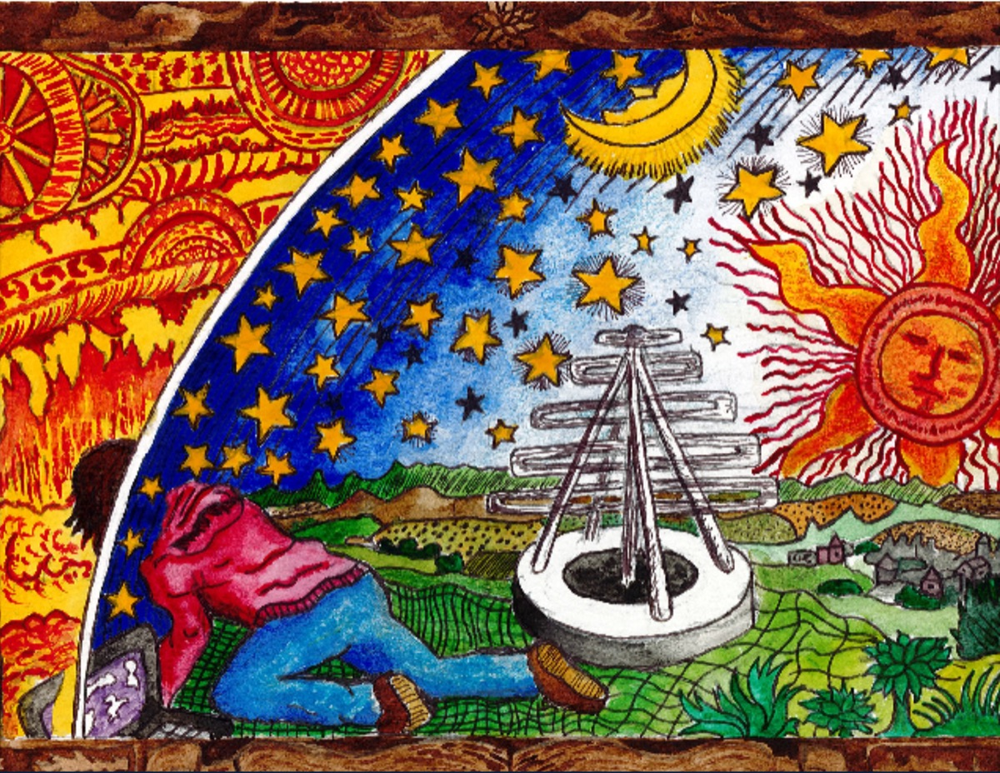

Sambit Giri
Astrophysicist & Data Scientist
Bridging theoretical physics
and data-driven discoveries.
I develop scalable, simulation-based inference frameworks to understand how astrophysical processes shape cosmological structures. By combining physical modeling, machine learning, and massive datasets, I connect theories of the early universe directly to observations from LOFAR, JWST, Euclid, SKA and the Roman Space Telescope.
Recent Updates
Academic Background
My research sits at the intersection of cosmology and data science. I try to understand how profound astrophysical processes — such as the reionization of the intergalactic medium (IGM) during the first billion years, or energetic baryonic feedback during late times — affect cosmological structures and our ability to measure them.
My personal journey here has been equally dynamic. Growing up in a small Indian city, navigating the intense environment of the Indian Institute of Technology (IIT) Varanasi, and eventually making the move to establish my career in Europe meant adapting to entirely new academic systems and cultures. Having lived and researched across Sweden, Switzerland, and the Netherlands, I've developed a highly adaptable, cross-cultural approach to science.
Today, I bring that global perspective to my role as an Independent Researcher (PI) at Stockholm University, leading a research program funded by the Olle Engkvists Stiftelse. My past appointments include a Nordita Fellowship and postdoctoral positions at the University of Zurich and the University of Groningen, and my work was recognized with the URSI Young Scientist Award in 2023.
Education
PhD in Astronomy
Stockholm University · 2015–2019
Integrated M.Tech, Engineering Physics
IIT (BHU) Varanasi · 2010–2015 · Gold Medallist

The Quest for Cosmic Dawn
This is a modern rendition of the classic Flammarion engraving, created for the cover of my PhD thesis. It serves as an allegory for humanity's enduring curiosity about the cosmos, substituting the classical mechanisms of the heavens with the Square Kilometre Array (SKA) — our next-generation observational tool. Crucially, the seeker is depicted alongside a computer, symbolizing the indispensable role of advanced data science techniques in modern astrophysics. This artwork perfectly encapsulates my core research vision: bridging theoretical physics with data-driven discoveries to pierce the cosmic veil.
The Core of My Research
Research Vision & Future Directions
Looking forward, my research program is transitioning from summary statistics to field-level inference across cosmic time. By developing unified, multi-wavelength frameworks, I aim to synergize 21-cm maps from the SKA with high-redshift galaxy surveys from Euclid and Roman. This ambitious strategy will break long-standing parameter degeneracies, enabling us to extract maximal cosmological information and uncover the fundamental physics driving both the Epoch of Reionization and late-time structure formation.
Featured Open-Source Tools
I am a strong advocate for open-source science. Making computational pipelines publicly available is an ethical commitment to transparency, reproducibility, and collaborative progress. It ensures that scientific claims can be independently verified and invites crucial feedback from the community. Below are a few of my featured projects. You can explore all my public repositories on my GitHub profile .
Major Collaborations & Consortia
Teaching & Outreach
Beyond my core research, I am deeply committed to education and making complex astrophysical and mathematical concepts accessible. I develop interactive tools and software packages designed specifically to help students and the broader community engage with data science and abstract mathematics.